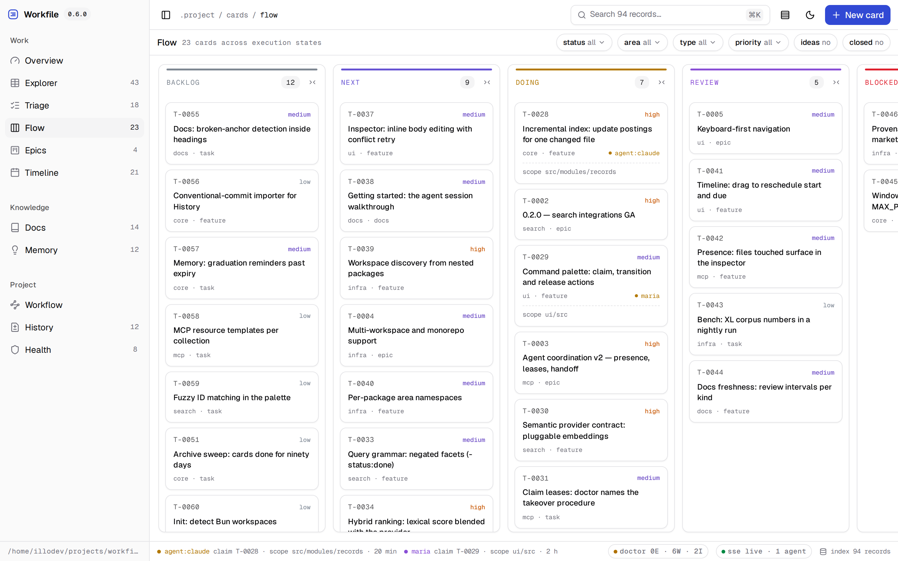

the repository is the database
Give your agents somewhere to write things down.
Workfile turns .project/ into shared ground for
humans and AI agents — work, docs, history and durable memory
as versioned Markdown. No SaaS, no lock-in. Just files in your
repository.
npx @illodev/workfile init
MIT · Node ≥ 22 · Claude Code, Cursor, Copilot
--- id: T-0142 title: Rate-limit the export API status: doing area: core scope: [src/api] claimed_by: claude-code --- Blocked on the queue decision — see memory/ADR-0031.
A card is a file — reviewed in the diff, versioned with the code.
Every project generates knowledge. Most of it dies.
The plan lives in a SaaS board. The decision lives in a chat thread. And the agent that did the work forgot everything by lunch.
Workfile keeps all of it where the code is: every card, decision, changelog entry and learning is a Markdown file in your repository — reviewed in the pull request, versioned with the history, readable long after the tooling is gone.
— no browser state
— no database
— remove the
package, keep the records
Four domains, one protocol
Every record is Markdown with frontmatter, validated and indexed. The CLI, local UI, HTTP API and MCP server all speak through the same core.
.project/ ├── cards/ ├── docs/ ├── changelog/ │ ├── unreleased/ │ └── releases/ ├── memory/ ├── agents/ ├── assets/ └── VERSION
cards/
Work
Cards with states, priorities, dependencies, epics and a Gantt — plus claims that say who is on it, over which paths.
docs/
Docs
Managed or merely indexed documentation, with backlinks, freshness warnings and broken-link diagnosis.
changelog/
History
Structured change fragments that cut into releases and render your public CHANGELOG.md.
memory/
Memory
Decisions, learnings, incidents and expiring context — the knowledge that otherwise dies in chat threads.

Built for agents, honest for humans
An agent discovers context, claims its scope, records what it learned and ships a changelog fragment — because the protocol makes that the path of least resistance.
MCP server. Local, dependency-free, stdio. Search, bounded context, mutations with revisions — read-only mode included.
Enforced, not agreed. Move a card
another actor holds and the mutation refuses with
CARD_CLAIM_OWNER_MISMATCH — a guarantee
no prompt can make.
Review is not done. A card with
unproven acceptance criteria cannot reach
done: the transition refuses with
CARD_ACCEPTANCE_UNMET. A merge is not
evidence.
Generated instructions. One canonical protocol, synced for Claude Code, Cursor and Copilot — never hand-drifted.
$ workfile agents context --card T-0142 # Agent context — T-0142 ## T-0142 — Rate-limit the export API _card · doing · core_ _scope: src/api_ + 3 memories · 2 docs $ workfile card claim T-0142 --scope src/api T-0142 claimed by claude-code $ workfile card transition T-0142 done CARD_ACCEPTANCE_UNMET: 2 unproven acceptance criteria. Check them, or pass force.
# Claude Code /plugin marketplace add illodev/workfile /plugin install workfile@illodev
From zero to protocol in one command
npx @illodev/workfile init
Creates .project/, agent instructions and CI.
workfile ui
The local board, rendered over your Markdown.
workfile agents context --card T-0001
Everything an agent needs to start, bounded.

The demo replays this repository's own workspace — real cards, releases, incidents and learnings.